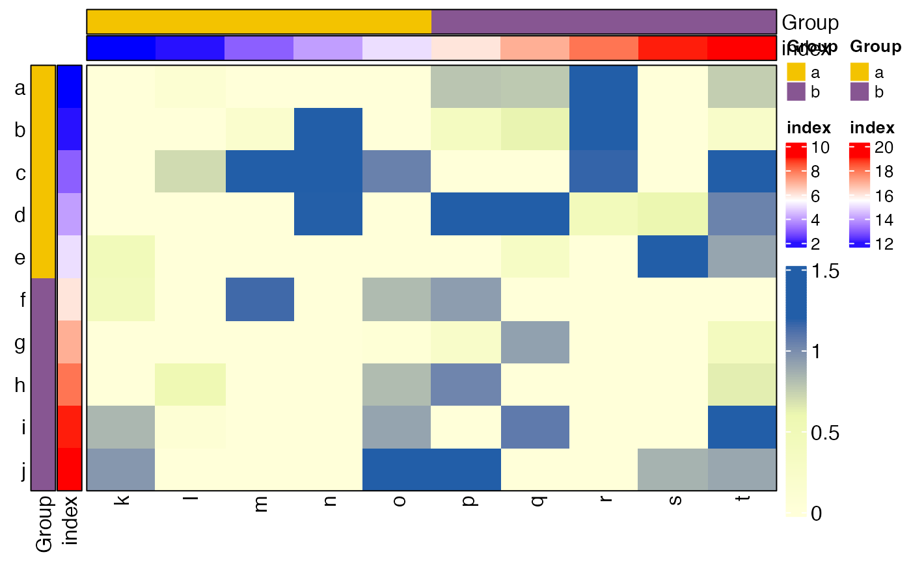

Draw Heatmap
Usage
HeatmapView(
mat,
breaks = c(0, 0.6, 1.2),
colors = c("#ffffd9", "#edf8b1", "#225ea8"),
na_col = "grey",
name = "hmap",
cluster_rows = FALSE,
row_dend_side = c("left", "right"),
cluster_cols = FALSE,
column_dend_side = c("top", "bottom"),
show_row_names = TRUE,
row_names_side = "left",
row_names_gp = gpar(fontsize = 12),
row_names_rot = 0,
show_column_names = TRUE,
column_names_side = "bottom",
column_names_gp = gpar(fontsize = 12),
column_names_rot = 90,
show_legend = TRUE,
top_ann = NULL,
top_ann_col = NULL,
show_top_legend = show_legend,
bott_ann = NULL,
bott_ann_col = NULL,
show_bott_legend = show_legend,
left_ann = NULL,
left_ann_col = NULL,
show_left_legend = show_legend,
right_ann = NULL,
right_ann_col = NULL,
show_right_legend = show_legend,
show_ann_name = TRUE,
annotation_legend_param = list(),
row_split = NULL,
column_split = NULL,
show_heatmap_legend = TRUE,
legend_title = NULL,
legend_title_position = "lefttop",
legend_direction = "vertical",
legend_title_gp = gpar(fontsize = 12),
legend_labels_gp = gpar(fontsize = 12),
legend_height = 2,
legend_width = 0.3,
legend_side = "right",
...
)Arguments
- mat
Matrix like object
- breaks
A vector indicating numeric breaks
- colors
A vector of colors which correspond to values in breaks
- na_col
Color for NA values.
- cluster_rows
Same as that in ComplexHeatmap::Heatmap.
- row_dend_side
Same as that in ComplexHeatmap::Heatmap.
- cluster_cols
Same as that in ComplexHeatmap::Heatmap.
- column_dend_side
Same as that in ComplexHeatmap::Heatmap.
- show_row_names
Same as that in ComplexHeatmap::Heatmap.
- row_names_side
Same as that in ComplexHeatmap::Heatmap.
- row_names_gp
Same as that in ComplexHeatmap::Heatmap.
- row_names_rot
Same as that in ComplexHeatmap::Heatmap.
- show_column_names
Same as that in ComplexHeatmap::Heatmap.
- column_names_side
Same as that in ComplexHeatmap::Heatmap.
- column_names_gp
Same as that in ComplexHeatmap::Heatmap.
- column_names_rot
Same as that in ComplexHeatmap::Heatmap.
- show_legend
Whether show annotation legends.
- top_ann
A data frame. Each column will be treated as a simple annotation. The data frame must have column names. Can also be a HeatmapAnnotation-class object.
- top_ann_col
A list of colors which contain color mapping to df.
- show_top_legend
Whether show annotation legends.
- bott_ann
Same as top_ann.
- bott_ann_col
A list of colors which contain color mapping to df.
- show_bott_legend
Whether show annotation legends.
- left_ann
Same as top_ann.
- left_ann_col
A list of colors which contain color mapping to df.
- show_left_legend
Whether show annotation legends.
- right_ann
Same as top_ann.
- right_ann_col
A list of colors which contain color mapping to df.
- show_right_legend
Whether show annotation legends.
- show_ann_name
Whether show annotation names.
- row_split
A vector or a data frame by which the rows are split. But if cluster_rows is a clustering object, split can be a single number indicating to split the dendrogram by cutree.
- column_split
Same as row_split.
- show_heatmap_legend
Whether show legends.
- legend_title
Character specifyin the legend title.
- legend_title_position
Position of title relative to the legend. topleft, topcenter, leftcenter-rot and lefttop-rot are only for vertical legend and leftcenter, lefttop are only for horizontal legend.
- legend_direction
Vertical or horizontal?
- legend_title_gp
Graphic parameters of the title.
- legend_labels_gp
Graphic parameters for labels.
- legend_height
Height of the whole legend body. It is only used for vertical continous legend.
- legend_width
Width of the whole legend body. It is only used for horizontal continous legend.
- legend_side
Side to put heatmap legend
- ...
Other parameters in draw.
Examples
library(grid)
library(SpatialEcoTyper)
library(ComplexHeatmap)
#> Warning: package ‘ComplexHeatmap’ was built under R version 4.2.1
#> ========================================
#> ComplexHeatmap version 2.12.1
#> Bioconductor page: http://bioconductor.org/packages/ComplexHeatmap/
#> Github page: https://github.com/jokergoo/ComplexHeatmap
#> Documentation: http://jokergoo.github.io/ComplexHeatmap-reference
#>
#> If you use it in published research, please cite either one:
#> - Gu, Z. Complex heatmaps reveal patterns and correlations in multidimensional
#> genomic data. Bioinformatics 2016.
#> - Gu, Z. Complex Heatmap Visualization. iMeta 2022.
#>
#>
#> The new InteractiveComplexHeatmap package can directly export static
#> complex heatmaps into an interactive Shiny app with zero effort. Have a try!
#>
#> This message can be suppressed by:
#> suppressPackageStartupMessages(library(ComplexHeatmap))
#> ========================================
dat = matrix(rnorm(100), 10)
rownames(dat) = letters[1:10]
colnames(dat) = letters[11:20]
rowann = data.frame(Group = rep(letters[1:2], each=5), index = 1:10)
colann = data.frame(Group = rep(letters[1:2], each=5), index = 11:20)
HeatmapView(dat, left_ann = rowann, top_ann = colann)
#> Loading required package: pals
